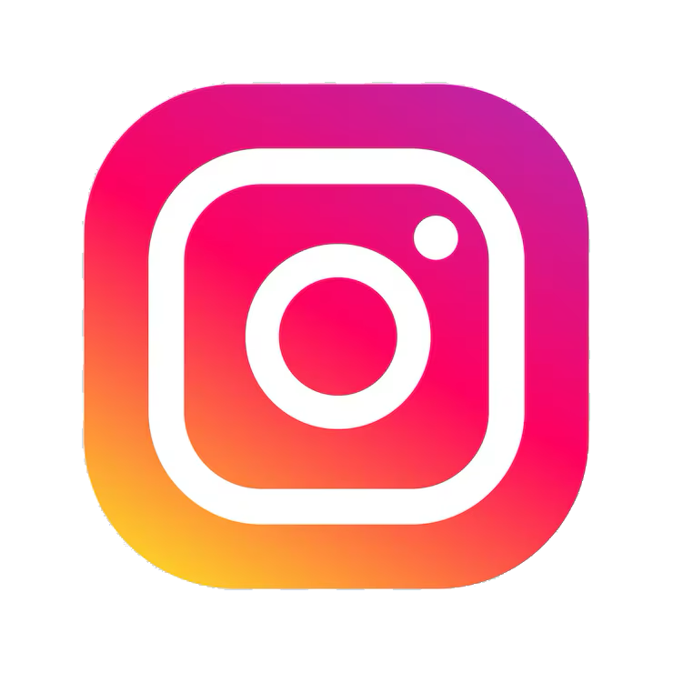
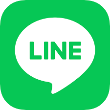
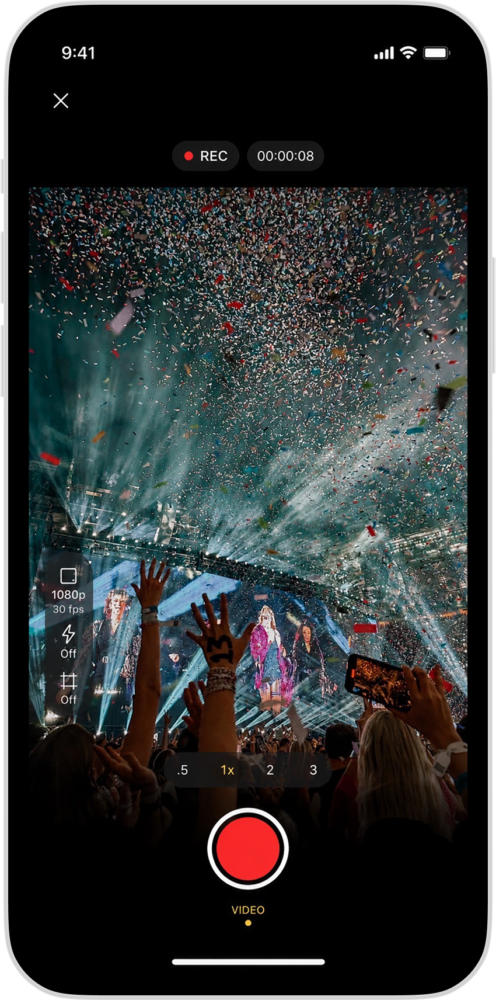
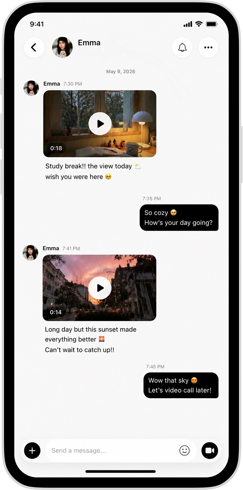
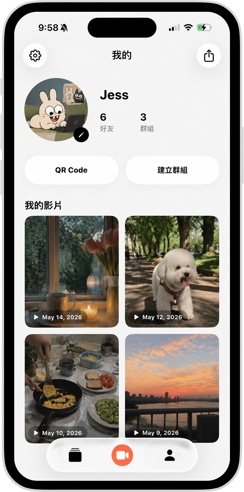
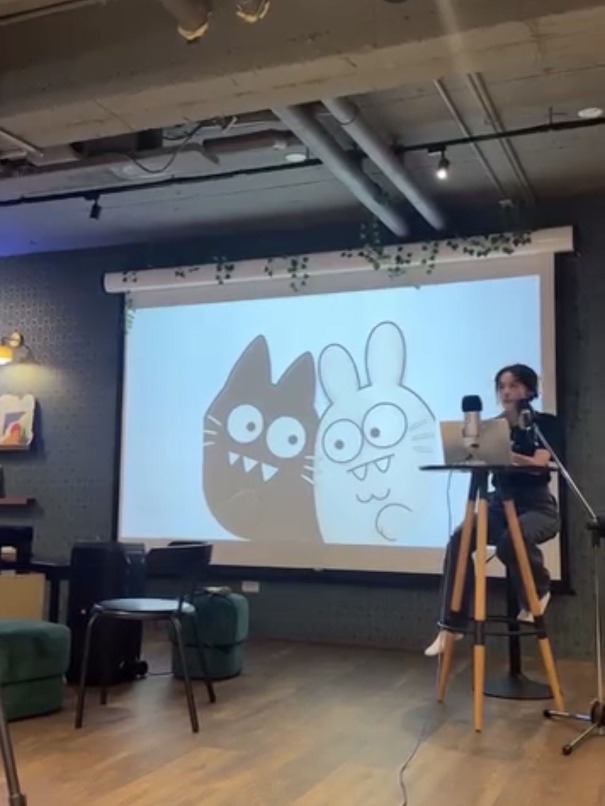

Nibble
Built and launched Nibble, a private video-sharing app for close relationships. Validated the concept through 30+ user tests and a live product demo to 40+ iOS developers in Taipei.
Overview
Nibble is a lightweight social communication app designed for close relationships: family, partners, and close friends. Unlike traditional social media platforms optimized for broadcasting and performance, Nibble focuses on intimate, low-pressure communication through short video moments.
I independently led the product vision, AI-native market research, product strategy, UI/UX design, AI-assisted prototyping, and user testing. The product is currently in TestFlight MVP stage.
Problem
Existing communication tools solve either public sharing or functional messaging, but they do not fully support small, emotionally warm moments between close people. Instagram Stories make users think about audience, appearance, and social reaction, while LINE is reliable but often feels crowded, utility-heavy, and too transactional for intimate updates.
For long-distance relationships, students moving abroad, families living apart, or busy friends, the issue is not a lack of ways to communicate. The harder problem is keeping a sense of daily presence when sharing a small video can feel too exposed for social media and too effortful or random inside a chat thread.
How might we…
Design a private video check-in experience that feels emotionally warm, lightweight, and personal, without the pressure of public social media or the clutter of everyday messaging apps?
Users frequently…
- hesitate to send small moments
- overthink who will see a story and how they appear online
- let personal updates get buried inside busy chat apps
- feel disconnected even while messaging daily
Goal
Product Goals
- Create a low-pressure communication tool for close relationships.
- Encourage users to share authentic everyday moments.
- Make asynchronous video communication feel emotionally intimate.
- Reduce friction between recording, sharing, and responding.
Strategic Questions
- Can emotionally driven micro-interactions increase engagement?
- How does private social behavior differ from public social media behavior?
- Can AI-assisted research and prototyping help a solo PM/designer validate faster?
AI-Native Market Research
To validate whether relationship maintenance was a meaningful problem worth solving, I built an AI-assisted research workflow combining Reddit discussions, competitor analysis, user interviews, and NotebookLM synthesis.
Rather than manually reading hundreds of posts, I used AI to cluster recurring behavioral patterns, identify contradictions, and surface underlying psychological barriers across long-distance friendships, living abroad, family relationships, and communication behaviors on Snapchat, BeReal, Locket, and Instagram Close Friends.
I then tested the concept with 30+ participants and presented Nibble at a Taipei iOS developer meetup attended by 40+ developers and builders, using feedback to refine onboarding friction, feature priorities, and positioning.
AI Workflow
Tools Used


- ChatGPT
- NotebookLM
- Reddit research
- Competitive analysis
Research Scale
- 20+ Reddit discussions analyzed
- 5 competitor ecosystems studied: Instagram, Instagram Close Friends, Snapchat, BeReal, and Locket
- Multiple real-world interviews across long-distance friendship, family relationship, and communication behavior contexts
Research Process
- Collected qualitative signals from Reddit communities and user interviews.
- Used NotebookLM to synthesize recurring themes and behavioral patterns.
- Challenged assumptions by comparing relationship behaviors, sharing habits, and competitor mechanics.
- Translated raw observations into product hypotheses and positioning opportunities.
Key Findings
Relationships rarely fade because people stop caring. They fade because everyday moments go unshared.
Across communities, people wanted to stay connected with friends and family, yet hesitated to reach out because they did not know what to say, worried about bothering others, felt their updates were not important enough, or experienced communication as increasingly intentional rather than spontaneous.
Strategic Insight
The biggest barrier to relationship maintenance is not communication itself, but the friction of initiating communication. Products such as Snapchat, BeReal, and Instagram Close Friends reduce this friction by creating recurring reasons to share.
People don't need another messaging app. They need a low-pressure way to stay present in each other's lives.
Product Implications
- Prioritize everyday moments over polished content.
- Design for close relationships rather than broadcasting.
- Turn content into conversation instead of passive consumption.
- Reduce the psychological cost of sharing.
- Focus on emotional presence rather than social performance.
Market & Competitive Analysis
| Platform | Strength | Weakness |
|---|---|---|
|
 Instagram |
Strong visual sharing, Stories behavior, and social discovery | Audience-aware and easy to overthink; sharing can feel performative |
|
 LINE |
Reliable everyday communication and broad adoption in Taiwan | Feature-heavy and utility-first; intimate updates can get buried |
 BeReal
BeReal
|
Authenticity-focused photo sharing with low-production expectations | Prompt-driven and photo-first; less suited to intentional private video check-ins |
|
Snapchat
|
Fast casual sharing | Playful and fast, but less emotionally intentional for close relationships |
Nibble positions itself as a private emotional communication layer between messaging apps and social media: more personal than Instagram Stories, more expressive than LINE chat, more intentional than prompt-based photo sharing, and free from public engagement metrics.
UI/UX Design
Interaction Direction
- Prioritized recording and replay as primary actions.
- Simplified hierarchy to reduce decision fatigue.
- Removed public-facing social metrics.
Emotional Design
- Designed reactions and comments to feel lightweight.
- Explored mailbox and letter metaphors.
- Focused on calm, soft interaction patterns.
Visual Identity
Nibble uses minimalist black-and-white illustrated mascots, Ugly Cat & Bunny, to create recognizable emotional branding, lower social pressure, and an approachable indie-product personality.
Solution
I designed and built the iOS MVP, end-to-end user flow, interaction architecture, UI system, onboarding concepts, social interaction patterns, and emotional reaction mechanics.
Current MVP Flow
- Record a short video.
- Replay before sending.
- Send to friends or groups.
- Recipients react with emojis or comments.
- Conversations continue through lightweight threaded chat.
Core Features
- video-first communication
- asynchronous interaction
- lightweight reactions
- friend/group sharing
Product System
- emotionally focused UI
- AI-assisted workflow
- interaction prototypes
- TestFlight MVP





AI-Assisted Development Workflow
Prototype
Rapidly explored product ideas and interaction patterns using AI-assisted tools.
Generate
Used iterative UI generation to test layout and visual directions faster.
Validate
Moved from concepts to clickable and functional MVP states for early feedback.
Build
Accelerated development without a full engineering team while preserving product judgment.
Impact & Results
Product Outcomes
- Built and launched a functional MVP on TestFlight.
- Conducted user testing with 30+ participants.
- Presented the product to 40+ iOS developers and product builders.
- Gathered qualitative feedback to iterate on onboarding, sharing flows, and user engagement.
- Validated demand for a more personal and emotionally connected communication experience.
PM Outcomes
- Translated emotional insights into product strategy.
- Prioritized MVP scope under time constraints.
- Iterated rapidly through user feedback.
- Used AI tools as PM leverage rather than replacement.
One of the strongest validation signals was that users described the app as feeling warmer and more personal than existing communication platforms.

Key Learnings
1. Distribution matters as much as product quality
Great products do not naturally gain users. This made me more interested in distribution strategy, shareability loops, emotional virality, creator-style product marketing, and indie app growth mechanics.
2. Emotional products require emotional onboarding
Users needed stronger context to understand why Nibble exists, who it is for, and how it differs from traditional messaging apps.
3. Simplicity is harder than adding features
I repeatedly reduced UI complexity, unnecessary actions, feature creep, and interaction overload to preserve focus and emotional clarity.
4. AI changes product iteration speed
AI-assisted workflows lowered execution barriers, but strong product judgment became even more important. AI can accelerate execution, but not product taste or strategic thinking.
Product Artifacts
- Product concept documentation
- AI-assisted research synthesis
- User flow diagrams
- MVP feature prioritization
- UI iterations
- Design system exploration
- TestFlight MVP
- Brand mascot system
- Interaction prototypes
- User journey maps
- Product decision tradeoffs
- AI-assisted workflow examples